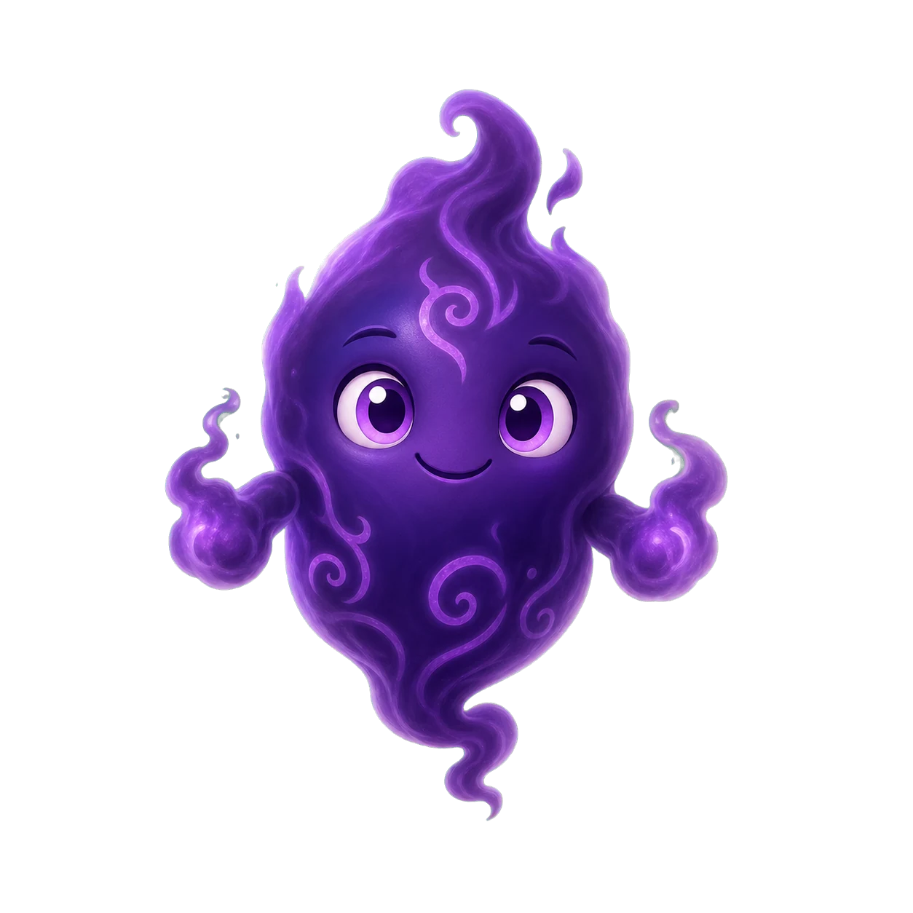
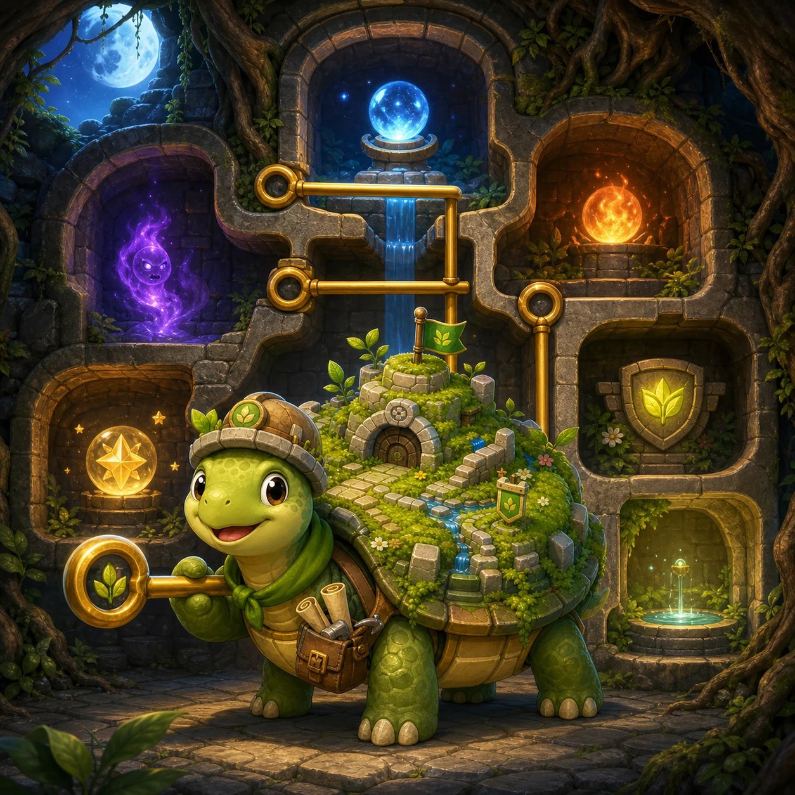

Taro's living Rootvault
Moonwater channels beneath Taro's fortress shell have tangled with Emberlight, shadows, and ancient rune locks.

Opening the Rootvault…
Read the chambers, then pull one complete golden pin.
Guide Taro and the Star Core to the sanctuary without mixing dangerous materials.
This private trial explains the complete chamber logic while the game remains outside public search.
Moonwater channels beneath Taro's fortress shell have tangled with Emberlight, shadows, and ancient rune locks.
Water cools Emberlight into steam. A Shell Ward protects Taro once. Keys open matching rune pins.
A wrong route may strand the Star Core or expose Taro. Restart restores the exact chamber.
Tap a pin and Pull, or focus a pin and press Enter or Space. Held input never repeats.
Drag the rail. A glowing frame marks the centered chamber.
Spend Seed Marks on planning aids. Solutions never change.
Choose a planning aid. Its cost and your balance stay visible.
Continue resumes the exact rooms, pins, materials, and pull count. Returning ends this attempt.